열 및 물질전달 1. 개론
열역학에서 시스템과 주변의 상호작용을 통하여 에너지가 전달될 수 있다는 것을 배웠다. 이러한 상호작용을 일과 열이라고 부른다. 그러나 열역학은 이러한 상호작용이 일어나는 동안, 결과만을 다루고 상호작용이 일어나는 시간동안의 변화나 상호작용의 본질에 대한 정보를 주지 못한다. 이 책의 목적은 열전달 과정에 대한 연구와 열전달률을 계산하는 관계식을 통하여 열역학적 분석을 확장하는 것이다.
"열전달이 무엇인가? 열은 어떻게 전달되는가? 왜 열전달이 중요한가?"라는 질문을 함으로써 기초를 완성하고자 한다. 첫 번 째 목적은 열전달 과정의 근본이 되는 기초적 개념과 원리에 대한 이해를 발전시키는 것이고, 두번째 목적은 열전달의 지식을 열역학 1법칙과 함께 사용할 수 있는 방법과 연결된다.
1.1)열전달이란 무엇이며 어떻게 전달되는가?
열전달은 다른 위치에서 온도 차이가 만들어내는 열에너지의 흐름이다. 언제든지 동일 매질이나 매질 사이에 온도차이가 존재하면 열전달은 항상 발생한다. 열전달은 세 가지 mode에 의해 발생한다.
전도:정지한 매질에서 온도 구배가 존재할 때
대류: 표면과 움직이는 유체가 다른 온도를 가지고 있을 때 발생하는 열전달
복사:전자기파 형태로 에너지가 방출되면서 열전달
1.2:물리적인 근본과 전달률 방정식
전도: 전도를 언급할 때 우리는 원자와 분자의 활동의 개념을 떠올려야 한다. 왜냐하면 전도는 원자와 분자 수준에서 발생하기 때문이다. 전도는 입자 사이의 상호작용에 의하여 물질 내의 활동적인 입자에서 덜 활동적인 입자로 에너지가 이동하는 것으로 생각할 수 있다.
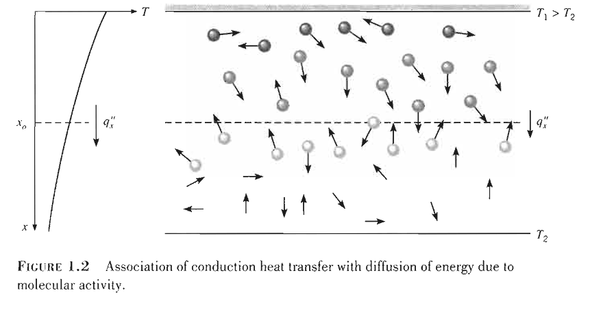
온도구배가 존재하는 기체가 있다고 생각해보자. 그리고 거기에는 체적운동 또는 거시적 움직임이 없다고 가정하자. 위 그림과 같이 기체는 서로 다른 온도를 유지하고 있는 표면 사이의 공간을 채울 수 있다. 임의의 점에서 이 온도를 이 점과 인접한 기체분자의 에너지라고 보자. 더 높은 온도는 더 높은 분자 에너지와 연관되어 있다. 이웃한 분자들이 충돌할 때, 더 활동적인 분자에서 덜 활동적인 분자로 에너지 이동이 발생한다. 온도구배가 존재할 때, 전도에 의한 에너지 전달은 온도가 감소하는 방향으로 일어나야 한다. 이러한 에너지 전달을 에너지 확산이라고 할 수 있다.
열전달 과정은 적당한 전달률 방정식으로 정량화할 수 있다. 이러한 방정식들은 단위시간당 전달되는 에너지의 양을 계산하는 데 사용될 수 있다. 열전도에 대한 전달률 방정식은 푸리에의 법칙이라고 알려져 있다.
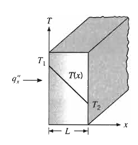
위 그림에서 T(x)의 온도 분포를 가지고 있는 1차원 평면벽에 대한 전달률 방정식은 다음과 같이 표현된다.
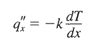
만약 온도가 감소한다면, 그 방향으로 양의 열전달이 발생하며 이때 온도차가 많을 수록 열전달이 많이 일어난다. 열 유속 q''x는 heat flux 라고 불리며 단위로 W/m^2 을 쓴다. 상수 k는 열전도율로 알려진 전달 물성값이고, 벽 재질의 특성값이다.
만약 온도분포가 선형적인 경우에 정상상태에서 온도 구배는 다음처럼 표현할 수 있다.
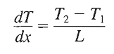
이때 열유속은 다음과 같다.
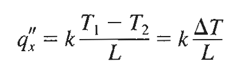
열유속은 보통 양의 값을 기준으로 한다. 따라서 T1은 높은 값을 대입한다. 즉 두 지점 사이의 열유속은 만약 온도차가 선형이고 정상상태라면 두 지점 온도차이를 길이로 나눈 값에 k를 곱한 것이다.
예제1.1) 벽 두께가 0.15m이고 열전도율이 1.7W/m*K인 공업용 가열로는 내화벽돌로 만들어져 있다.정상상태 작동 중 안쪽 표면과 바깥쪽 표면의 온도는 각각 1400K와 1150K이다. 높이 0.5m 폭 1.2m인 벽을 통한 열손실률은 얼마인가?
q''x=k*250K / 0.15 m=2833 (W/m*K) *(K/m)= 2833 (W/m^2)이다. 즉 벽 방향으로 m^2당 2833 W의 열이 이동한다.
이것은 단위면적당이므로, 면적을 계산하면 0.6m^2이다.
2833 * 0.6=1700W이다. 이는 초당 1700 J의 에너지가 가는 것으로 볼 수 있다.
대류
대류 열전달 기구는 두 가지 기구로 구성되어 있다. 불규칙적인 분자운동에 의한 에너지 전달 외에 에너지가 체적 또는 거시적 유체운동에 의해 전달된다.이러한 유체의 운동은 많은 수의 분자가 집단적으로 움직인다는 것과 연관되어 있다. 온도구배가 존재하는 경우 이러한 움직임은 열전달의 원인이 된다. 보편적으로 대류라는 용어는 이러한 집합적인(확산+체적) 이동을 언급할 때 사용되고, 유동대류는 체적 유체 운동만을 언급할 때 사용된다.
우리는 흐르는 유체와 유체에 둘러싸인 표면이 다른 온도에 있을 때 발생하는 대류 열전달에 특히 관심이 있다.
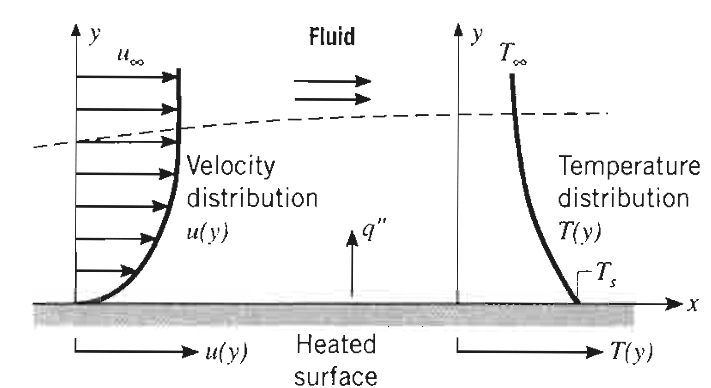
위 그림과 같이 가열된 표면 위를 흐르는 유체를 가정해보자.유체와 표면의 상호작용의 결과는 유체의 속도가 표면에서 0부터 유체의 흐름에 연관된 유한한 속도 u∞까지 변하는 유체영역의 발달이다. 이러한 영역은 velocity boundary layer라고 부른다. 이때 y=0일때 Ts에서 외부 유동이 T∞까지 변하는 유체영역이 발생한다. thermal boundary layer 라고 부르는 이 영역은 속도가 변하는 속도경계층에 비교하여 작거나 크거나 같을 수 있다. 어느 경우에서나 Ts>T∞이면, 대류 열전달은 표면에서 외부유동으로 발생한다.
대류 열전달 중 체적운동을 생각해보자. 표면 근처에서는 유체의 속도가 0이므로, 열전달은 오직 불규칙적인 분자 운동인 확산으로만 일어난다. 대류 열전달에서 체적 유체 운동에 의한 기여는 X축 방향으로 유체가 이동함에 따라 경계층이 발달한다는 사실로부터 일어난다. 사실 이 경계층으로 전달된 열에너지는 하류로 쓸려 내려가고 궁극적으로 경계층 외부의 유체로 전달된다. 경계층 현상의 이해는 대류 열전달을 이해하는 데 필수적이다.
대류에서 전달되는 에너지는 유체의 내부에너지이다. 그러나 일부 대류 과정에서 잠열의 교환이 발생한다. 두 특별한 경우는 비등과 응축이다. 예를 들면 끓는 물의 용기 바닥에서 발생하는 공기 방울이 만드는 유체 운동과 차가운 냉각수 관의 외부 표면에서 수증기 응축이 만드는 유체운동이 만드는 대류 열전달이다.
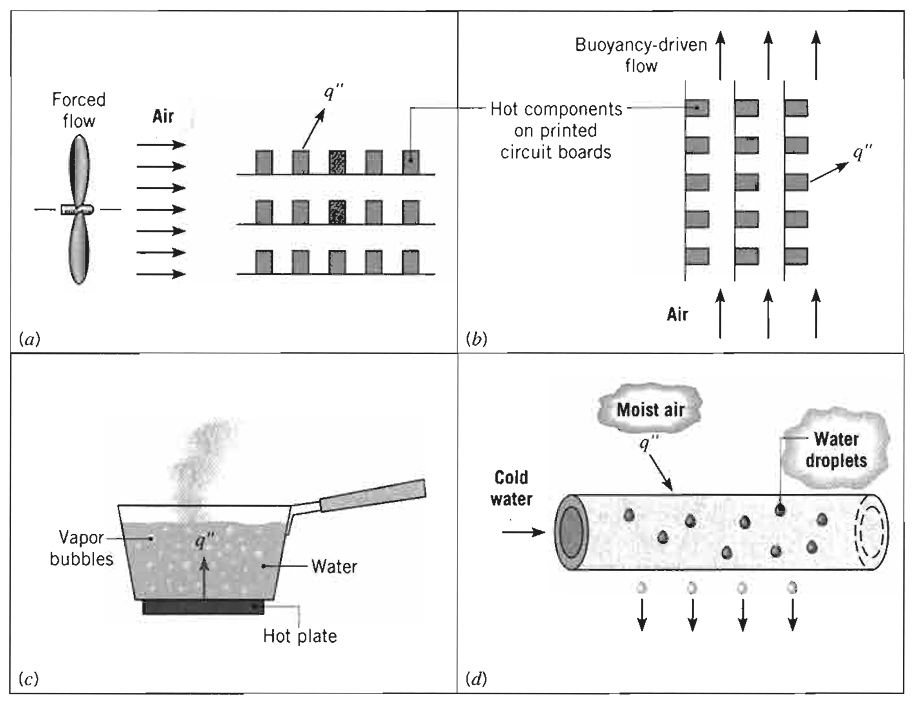
대류 열전달의 방정식은 다음과 같다.
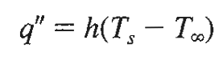
여기서 q'' 대류 열유속은 표면온도 Ts와 유체온도 T∞에 비례한다. 이 식은 뉴턴의 냉각법칙으로 알려져 있고 비례상수 h는 대류 열전달계수라고 한다. 대류 열전달의 모든 연구는 h를 어떻게 결정하는가이다. 이러한 방법에 대한 고려는 추후 이루어지지만 대류는 전도 문제 풀이에 종종 사용될 것이다. 이러한 문제들에서는 h를 아는 것으로 가정하는데, 대표적인 h는 다음과ㅣ 같다.
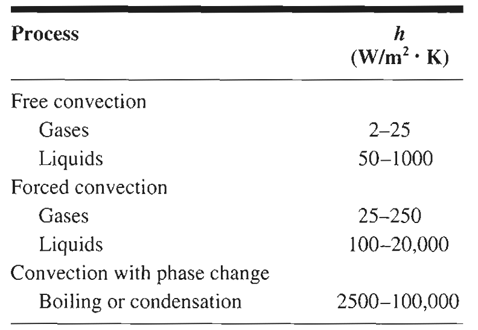
대류의 경우 보통 Ts가 더 높은데, 이 경우에 열은 유체쪽으로 이동하게 된다.
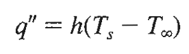
그러나 열이 벽쪽으로 이동할 수도 있다. 따라서 이동 방향을 잘 보는 것이 중요하다.
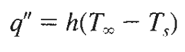
복사
열복사는 방사되는 에너지이다. 주로 고체표면으로부터의 복사에 초점을 맞출 것이지만, 방사는 또한 액체와 기체로부터 일어날 수도 있다. 물질의 형태와 관계없이 방사는 구성하고 있는 원자나 분자들의 전자배열의 변화로 생각할 수 있다.
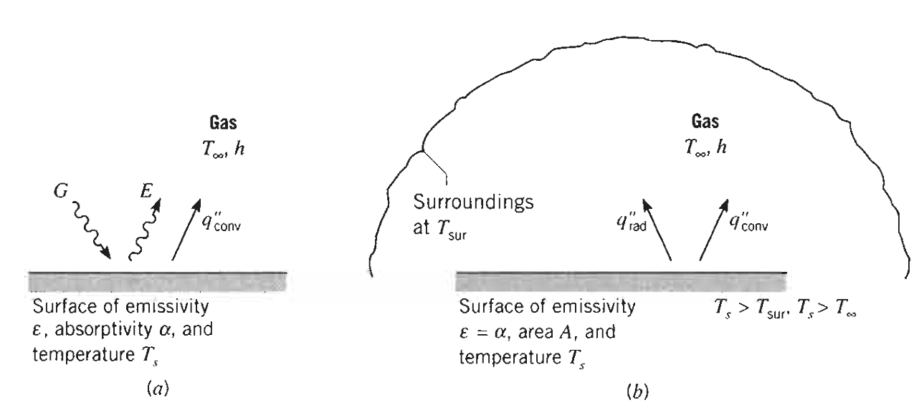
표면에서 방사된 에너지 E는 표면방사력이라고 하며 단위는 W/m^2이다. 방사력에는 상한이 있으며 이는 다음의 스테판 볼츠만 법칙으로 주어진다.
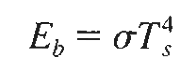
근데 이건 상한을 의미하고, 실제 이정도로 방출하는 물체는 흑체라고 부른다. 이때 Ts는 표면의 절대온도이고 스테판 볼츠만 상수 5.67*10^-8 W/m^2K^2 이다.
실제로는 다음과 같은 표면 방사력을 갖는다.
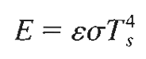
여기서e처럼 생긴 기호는 방사율이라고 하는 표면의 방사 물성값으로, 0~1 사이 값을 가진다. 이건 표면에 따라 달라지는데, 그 값이 정리되어 있다.
복사는 또한 주위로부터 표면에 입사될 수 있다. 어떤 특정 표면에 들어오는 모든 복사율을 조사 G라고 한다. 조사의 일부 또는 전부는 표면에 흡수되며 그 결과 물체의 열에너지가 증가한다. 단위표면적당 흡수되는 복사 에너지 비율은 흡수율 a라고 하는 표면 복사 물성값으로 계산할 수 있다.
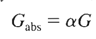
이때 흡수되지 않은 나머지는 불투명한 표면이라면 반사된다. 표면이 투명하면 투과될 수 있다. 이 경우에는 열에너지를 증가시키지 않는다. 이때 a값은 표면 뿐만 아니라 조사되는 것에도 영향을 받는다. 예를 들어 태양에서 조사된 열과 난로에서 조사된 열이 같더라도 흡수율a 이 달라질 수 있다.
자주일어나는 특별한 경우로, 표면이 있고 주변에 또 다른 물체가 있어서 서로 복사 열교환이 일어나는 경우가 있다. 이때 표면을
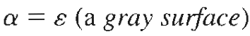
회색체 표면이라고 가정하면 정미 복사 열전달은 다음과 같다.
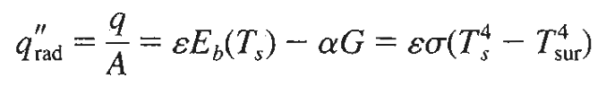
앞에거는 흑체의 표면 방사에너지에 방사율을 곱한 것이고, 뒤에는 그만큼 조사되어 들어오는 에너지에 흡수율을 곱한 것이다. 이때 방사율=흡수율일 경우 맨 뒤의 공식까지 성립하게 된다.(회체표면 가정)
이 표현은 복사방사에 의하여 방출된 열에너지와 복사흡수에 의하여 얻은 열에너지 사이에는 차이가 존재함을 알려준다. 이를 다음 형태로 나타내기도 한다.
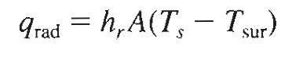
이때 hr은 다음과 같다.
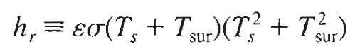
이는 대류와 비슷한 방법으로 표현하기 위함이다.
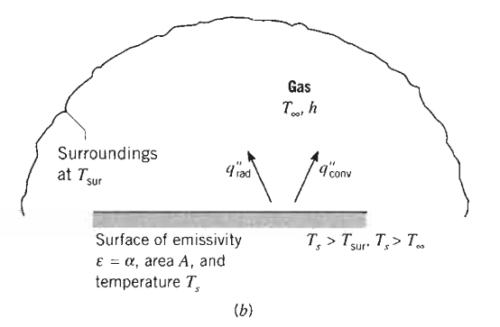
대부분의 표면에서는 복사체 주변에 기체가 있어 대류와 복사가 동시에 일어나는데, 만약 이 경우에 "총" (q''에서 ''를 떼고 표현한다.) 열전달률은 다음과 같다.
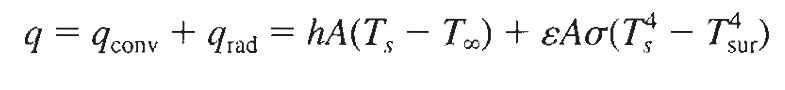
마지막으로 관련된 예제를 풀어보자.
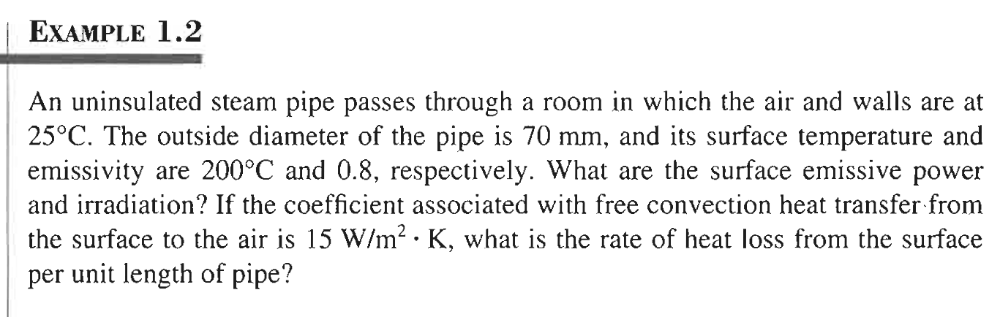
파이프 표면온도가 200도이므로 파이프로부터 공기중으로 열 방출이 일어날 것이다. emissive power와 irradiation이 무엇인가? 방사E랑 조사G를 의미하는 것 같다.
heat loss인데 단위가 단위길이당이다. 먼저 방사 조사는 일어날거고 그다음 대류가 있을 것이다.
대류의 경우 q=hA△T이다. 또한 복사의 경우
E=e∂Ts^4
G=a∂Tsur^4
회체표면 가정시 방사율=흡수율이므로
q''rad=E-G=e∂Ts^4- e∂Tsur^4 = e∂(Ts^4 - Tsur^4)
따라서 실제 값은
q=q대류 + q복사
= hA△T + e∂A(Ts^4 - Tsur^4)
이때 A가 문제인데, A의 경우 파이프가 70mm 내경을 가지고 있으므로 표면적은 2파이R=2*3.14*35mm=0.2198m이다. 즉 단위길이당
hA△T + e∂A(Ts^4 - Tsur^4)
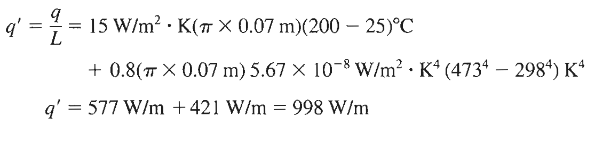
여기서 한가지 짚고 넘어갈 점은, 여기서는 온도차가 매우 크기 때문에 복사 값이 크지만 대부분의 경우 복사효과는 무시할 수 있다.